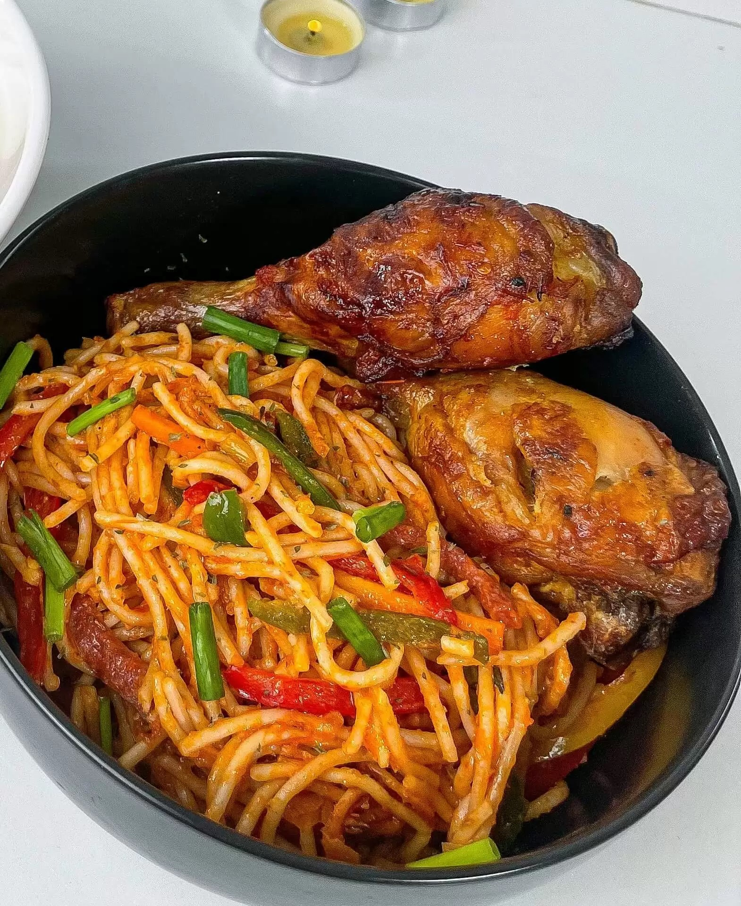

Home
Spaghetti Recipe

Description
Spaghetti is a classic Italian pasta dish made with long, thin noodles and a rich tomato sauce. It's a favorite comfort food enjoyed by people of all ages.
You'll Love it.
Ingredients
- 200g spaghetti noodles
- 2 tablespoons olive oil
- 1 onion, chopped
- 2 cloves garlic, minced
- 1 can (400g) crushed tomatoes
- 1 teaspoon dried basil
- Salt and pepper to taste
Steps
- Cook the spaghetti noodles according to the package instructions until al dente. Drain and set aside.
- In a large pan, heat the olive oil over medium heat. Add the chopped onion and minced garlic, and sauté until softened.
- Add the crushed tomatoes, dried basil, salt, and pepper to the pan. Simmer the sauce for about 15-20 minutes, stirring occasionally.
- Toss the cooked spaghetti noodles with the tomato sauce until well coated.
- Serve hot, garnished with fresh basil or grated Parmesan cheese if desired.